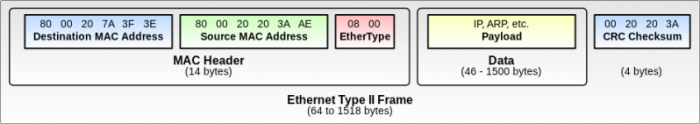
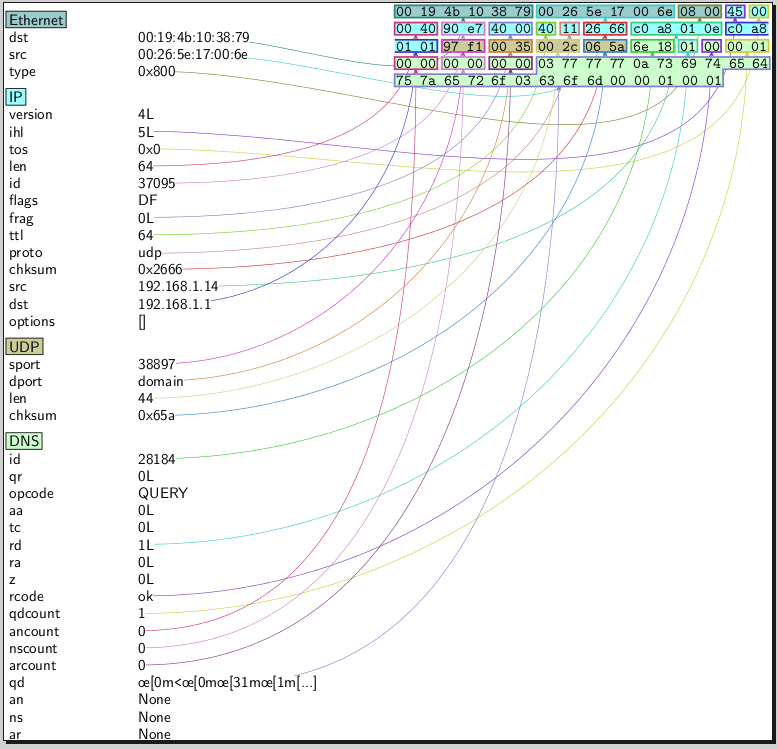

Scapy est un module pour Python permettant de forger, envoyer, réceptionner et manipuler des paquets réseau. Si le réseau vous intéresse et que vous aimeriez mieux comprendre le fonctionnement des outils traditionnels (wireshark, dig, ping, traceroute, nmap...), alors ce tutoriel est fait pour vous ! :) La compréhension de ce tutoriel nécessite quelques prérequis :
Des connaissances en Python (grosso modo les parties 1 et 2 du tutoriel officiel)
Des connaissances de base en réseau (je vous conseille la lecture du tutoriel de elalitte)
A l'issue de ce tutoriel, vous devriez être en mesure de programmer par vous même des utilitaires simples, et surtout de comprendre leur fonctionnement.
Profitant de la portabilité du langage Python, Scapy est multi-plateforme. Cela dit, je ne détaillerai ici son installation et son utilisation que sous Linux, ne possédant que cet OS lors de l'écriture de ce tutoriel. La procédure d'installation est décrite ici pour Mac OS X et ici pour Windows. Par facilité, vous pouvez également préférer installer GNU/Linux en machine virtuelle.
Installation
Depuis les dépôts de votre distribution
Pour les pressés, l'installation minimale se fait avec la commande suivante :
$ sudo apt-get install python-scapy
Scapy ne fonctionne qu'avec la branche 2.x de Python (>= 2.5), la dernière version de cette branche étant Python 2.7. De plus, vous pouvez étendre les possibilités de Scapy (rapports pdf, traceroute 3D...) grâce à d'autres paquets. Pour une distribution à base de Debian, l'installation complète se fait donc par cette ligne de commande :
Si vous souhaitez disposer de la toute dernière version de Scapy, vous pouvez l'installer depuis les sources en les récupérant depuis le dépôt mercurial. Si ce n'est pas déjà fait, installez mercurial :
Euh, quel rapport entre la métallurgie et les paquets ? o_O
Aucun. ^^ Forger un paquet désigne le fait de le construire en mettant les "mains dans le cambouis". Je m'explique. D'ordinaire, quand vous utilisez un logiciel orienté réseau tel qu'un navigateur web, un logiciel de messagerie, etc, celui-ci échange des paquets. Par exemple, votre navigateur, quand vous vous rendez sur http://www.siteduzero.com, échange des paquets avec le serveur web du Site du Zéro. Pour simplifier cet échange, on peut dire que votre navigateur envoie un paquet "envoie moi cette page web s'il te plaît", et que le serveur du Site du Zéro lui renvoie le paquet "tiens, la voici : <html>Coucou</html>" (ne m'en veuillez pas pour cet exemple :D ). Si vous décidez de programmer un tel logiciel, en pratique, vous n'aurez pas à vous soucier du détail de cette conversation par paquets. Par exemple, en C++, à l'aide de la bibliothèque Qt, afficher une page web se fait ainsi :
QWebView *pageWeb = new QWebView;
pageWeb->load(QUrl("http://www.siteduzero.com/"));
Comme vous le voyez, aucune connaissance en réseau n'est nécessaire pour réaliser une telle chose, car on n'a pas réellement mis les mains dans le cambouis. Or, nous, ce qui nous intéresse, avec Scapy, c'est de comprendre le détail de ces mystérieuses conversations...
Création d'une trame Éthernet
L'échange de paquets avec un serveur web est loin d'être simple, elle fait intervenir le protocole HTTP, le handshake TCP, l'entête IP, bref, nous allons rester plus basique. Commençons donc par créer et afficher une trame Éthernet dans l'interpréteur Scapy :
>>> ma_trame = Ether()
>>> ma_trame.show()
###[ Ethernet ]###
WARNING: Mac address to reach destination not found. Using broadcast.
dst= ff:ff:ff:ff:ff:ff
src= 00:00:00:00:00:00
type= 0x0
>>>
Comme on le voit, la création d'une trame éthernet se fait en instanciant la classe Ether(). Bien qu'on ne lui ai fournit aucun paramètre, on constate a l'appel de la méthode show() que les attributs dst, src et type ont des valeurs par défaut.
Que représentent ces différents attributs ? :euh:
Pour ceux qui ne connaitraient pas le protocole éthernet, voici la structure qu'une trame éthernet doit présenter :

Nous venons de créer une trame éthernet "pure", c'est à dire qu'on a rien dans data. Le CRC permet le contrôle d'intégrité de notre trame : si on le modifiait, notre trame deviendrait invalide et inutile. Il ne nous reste donc que 3 champs modifiables :
dst : représente l'adresse mac du destinataire
src : représente l'adresse mac de l'émetteur
type : représente le type de protocole (dépend du contenu de la partie "data" pour l'instant vide)
On aurait pu préciser l'adresse mac du destinataire lors de la création de la trame :
>>> ma_trame = Ether(dst='00:19:4b:10:38:79')
Les attributs dst, src et type sont modifiables à votre guise. Cela veut donc dire que vous pouvez facilement envoyer des trames en faisant croire que l'émetteur est quelqu'un d'autre ! :ninja:
Les envoyer ? Non, je ne sais pas faire ... :'(
Envoi de la trame
Pour envoyer une trame Éthernet, il existe la fonction sendp() :
>>> sendp(ma_trame)
.
Sent 1 packets.
>>>
Voilà, mon paquet a bien été envoyé à la machine dont j'avais précisé l'adresse mac.
Génial ! .. C'est tout ? :-°
Je vous vois bien déçu. :p Ce que nous venons de faire ne présentait guère d'intérêt, je vous l'accorde. En effet, une trame Éthernet pure ne sert pratiquement à rien ; pour pouvoir faire quelque chose d'intéressant, il faudrait donc mettre quelque chose dans le "data" vu plus haut... Nous allons donc faire de l'encapsulation.
Encapsulons !
Citation : Wikipédia
L'encapsulation, en informatique et spécifiquement pour les réseaux informatiques, est un procédé consistant à inclure les données d'un protocole dans un autre protocole.
Encapsuler les protocoles : l'exemple du ping
La commande ping permet de savoir si un hôte, désigné par son adresse IP, existe. En version cambouis, la commande ping consiste à envoyer un paquet ICMP "echo-request" à l'hôte et à dire si un paquet ICMP "echo-reply" a été renvoyé. Forgeons donc un paquet ICMP echo-request !
On voit que par défaut, l'instanciation de la classe ICMP() met le type du ping à echo-request. On pourrait tout à fait le modifier, tout comme les autres champs. Pour savoir ce qu'ils représentent, je vous renvoie à l'article ICMP sur Wikipédia. Dans cet article, on peut notamment lire quelque chose d'intéressant : un paquet ICMP est encapsulé dans un datagramme IP. En effet, c'est dans le datagramme IP qu'on va pouvoir renseigner l'adresse IP du destinataire. :magicien:
L'encapsulation entre protocoles, dans Scapy, est réalisée par l'opérateur / (slash). Rien à voir avec une division, donc ;) .
Voyons maintenant si 192.168.1.1 (ma Livebox) va répondre à cela par un paquet ICMP echo-reply.
Envoi du paquet
L'envoi s'effectue comme auparavant :
>>> sendp(mon_ping)
.
Sent 1 packets.
>>>
Hé, on a toujours rien ! Tu nous aurais menti ? :colere:
Oui et non ! Oui, car la fonction sendp() ne fait qu'envoyer, c'est vrai. Pour envoyer et recevoir, il faut utiliser les fonctions srp() et srp1(). Non, car dans le cas d'une trame Éthernet pure, srp() et srp1() n'auraient de toute façon rien reçu ! srp() renvoie deux objets : le premier contient les paquets émis et leurs réponses associées, l'autre contient les paquets sans réponse.
Bingo, on a bien reçu un ICMP echo-reply ! :) rep contient en réalité une liste de couples de paquets. En l'occurence, la liste ne contient qu'un seul couple de paquets, qu'on peut afficher ainsi comme on afficherai n'importe quel élément d'une liste en Python :
Le résultat est un couple (tuple à deux valeurs). Pour afficher le paquet émis (notre ICMP echo-request), on fera donc rep[0][0].show(), et pour le paquet reçu en réponse, rep[0][1].show() :
Enfin, souvent également, on ne s'intéressera pas à la partie Éthernet qui est de toute façon très bien remplie de façon automatique par Scapy. Il existe donc des fonctions send(), sr() et sr1() équivalentes à sendp(), srp() et srp1() mis à part le fait qu'elles se chargent toutes seules d'ajouter l'en-tête Éthernet. Un exemple :
>>> rep = sr1(IP(dst='192.168.1.2') / ICMP())
Begin emission:
.WARNING: Mac address to reach destination not found. Using broadcast.
Finished to send 1 packets.
.....................^C
Received 22 packets, got 0 answers, remaining 1 packets
>>>
J'ai arrêté manuellement (Ctrl-C) l'envoi au bout de 30 secondes. A l'issue de ce temps, la variable rep est vide : rien n'a été renvoyé, comme le laissait deviner le "got 0 answers". On peut rajouter une limite de temps (en secondes) à sr1() pour ne pas rester bloqué, grâce au paramètre timeout.
>>> rep = sr1(IP(dst='192.168.1.2') / ICMP(), timeout=0.5)
Begin emission:
WARNING: Mac address to reach destination not found. Using broadcast.
Finished to send 1 packets.
Received 0 packets, got 0 answers, remaining 1 packets
>>>
Pour voir les autres paramètres que peut prendre sr1(), faites help(sr1) :)
Exercice : scan d'une plage d'adresse
A la lumière des explications ci-dessus et avec quelques connaissances en Python, vous devriez maintenant être capable de coder un programme qui effectue un ping sur toute une plage d'adresses. Indice : pour désigner une plage d'adresse, vous pouvez simplement mettre '192.168.1.1-15' dans l'attribut dst de IP. :magicien:
#! /usr/bin/python
from scapy.all import *
rang = '192.168.1.1-15'
rep,non_rep = sr( IP(dst=rang) / ICMP() , timeout=0.5 )
for elem in rep : # elem représente un couple (paquet émis, paquet reçu)
if elem[1].type == 0 : # 0 <=> echo-reply
print elem[1].src + ' a renvoye un echo-reply '
Pour savoir que le champ type d'ICMP valait 0 dans le cas de l'echo-reply, vous pouviez vous renseigner sur la page Wikipédia vue plus tôt, ou faire ls(mon_ping) avec mon_ping de type echo-reply. ls(un_paquet) affiche en effet les attributs du paquet de manière numérique, et affiche également leur nom, leur type et leur valeur par défaut (entre parenthèses) :
Scapy permet, pour chaque attribut d'un paquet, de préciser une liste au lieu d'une valeur simple. On l'a vu juste avant, dans le cas de l'adresse IP du destinataire, mais cela est valable pour tous les attributs ! :o
Liste simple
Prenons un cas concret : nous voulons savoir si un serveur web est accessible en http et en https. Nous pourrions tenter un scan des ports correspondant par défaut : 80 et 443. Plutôt que d'envoyer/recevoir deux fois en changeant simplement le port, nous allons utiliser une liste simple sur le port de destination en mettant :
Lors de la création de mon_paquet, je précise le port source, le port de destination et je positionne le flag SYN. J'envoie ce paquet (qui en réalité représente deux paquets), comme d'habitude, avec sr(). Le résultat est composé des deux couples paquet émis / paquet reçu.
Le premier paquet reçu correspond à celui envoyé sur le port 80. Les flags positionnés sont bien SYN et ACK (SA) : le port est ouvert.
Le second paquet reçu correspond à celui envoyé sur le port 443. Les flags ne sont pas SYN et ACK mais RESET et ACK : le port est fermé.
Rang
Et si à la place de dport=[80,443], j'avais écrit dport=(80,443) ? (des parenthèses au lieu des crochets) Eh bien il n'y aurait pas eu 2 paquets d'envoyés, mais 364 : un pour chaque port de 80 à 443.
>>> mon_paquet = IP(dst='192.168.1.10') / TCP(sport=12345, dport=(80,443), flags='S')
>>> rep,non_rep = sr(mon_paquet)
Begin emission:
.***************************************************************************************************************************************************************************************************************************************************************************************************************************************************************************Finished to send 364 packets.
*
Received 365 packets, got 364 answers, remaining 0 packets
>>>
Et si on désire afficher ceux ouverts :
>>> for emis,recu in rep :
... if recu[1].flags==18 : # 18 <=> SYN+ACK
... print 'port ouvert : ', recu[1].sport
...
port ouvert : 80
port ouvert : 111
>>>
Exercice : programmer un traceroute
La commande traceroute permet de savoir par où passent vos paquets avant d'atteindre leur destination. Pour cela, on se sert de l'attribut ttl (time to live) de l'en-tête IP. Cet attribut diminue de 1 à chaque routeur traversé, et lorsqu'il atteint 0, il "meurt" et nous revient. On peut alors exploiter l'attribut src de son en-tête IP pour connaître l'adresse IP du routeur où il est "mort". Pour connaître tous les routeurs traversés, il suffit donc de mettre, dans l'attribut ttl, un rang.
Si vous ne comprenez pas tout, un bout de code vaut mieux qu'un grand discours :
Précisions : L'adresse IP de destination, '209.85.143.100', est celle d'un des nombreux datacenter de Google. J'encapsule dans mon paquet IP du TCP mais je pourrais y mettre de l'ICMP, de l'UDP, ou même rien, mais les firewall des routeurs sur le chemin risqueraient de ne pas laisser passer certains protocoles. Je fais varier le ttl de 1 à 25, mais on voit qu'en pratique le datacenter est atteint au bout de 11 sauts seulement. Au passage, on peut voir que mes paquets traversent ma Livebox (routeur n°1) et différents routeurs d'Orange et de Google.
Nous savons maintenant envoyer et recevoir des paquets, mais pour progresser dans notre compréhension des outils réseau, il nous faudrait lire et décortiquer leurs échanges de paquets. Par exemple : comment procède réellement la commande ping ? Comment procède nmap pour scanner un port ? Comment procède firefox pour récupérer http://www.siteduzero.com/index.html ? :euh:
C'est là qu'intervient la fonction sniff() de Scapy.
Présentation
Voilà une simplification de la signature de cette fonction :
Elle renvoie une liste de paquets (en comparaison, sr() renvoie deux listes de paquets). Ses paramètres sont :
count : nombre de paquets à capturer. 0 : pas de limite.
timeout : stoppe le sniff après un temps donné.
iface : désigne l'interface sur laquelle sniffer. La liste de vos interfaces est donnée par la commande ifconfig.
filter : filtre les paquets à garder d'après une chaîne de caractère. Exemple : filter="port 80" filtre les paquets ayant un lien avec le port 80.
lfilter : même chose, mais utilise une fonction plutôt qu'une chaîne. Exemple : lfilter=lambda x: x[1].src=='192.168.1.14' filtre les paquets émis par 192.168.1.14.
prn :fonction à appliquer à chaque paquet. Si la fonction retourne quelque chose, cela s'affiche. Exemple : prn = lambda x: x.show() va afficher le détail de chaque paquet.
Maintenant que les présentations sont faites, passons à l'étape suivante : explorons le réseau ! :pirate:
Utilisation
Que fait ping ?
Je lance mon sniff en filtrant sur la cible du ping, 192.168.1.10 :
>>> rep = sniff(filter="host 192.168.1.10")
J'exécute mon ping :
$ ping 192.168.1.10 -c 1
Je vais voir les paquets sniffés :
>>> rep.show()
0000 Ether / IP / ICMP 192.168.1.14 > 192.168.1.10 echo-request 0 / Raw
0001 Ether / IP / ICMP 192.168.1.10 > 192.168.1.14 echo-reply 0 / Raw
>>>
C'est à peu près ce que nous avions tout à l'heure ! :) À part le RAW... Que contient-il ?
o_O . Visiblement, rien de très pertinent ! ^^ Plus sérieusement, cette suite étrange de caractère peut permettre au destinataire de savoir qu'il a été la cible d'un ping effectué par la commande ping de Linux.
Que fait nmap ?
Tentons un scan SYN du port 80 de 192.168.1.10 avec nmap :
$ sudo nmap -sS -p 80 192.168.1.10
Les paquets sniffés sont alors :
>>> rep.show()
0000 Ether / ARP who has 192.168.1.10 says 192.168.1.14
0001 Ether / ARP is at 00:16:17:e3:ed:88 says 192.168.1.10 / Padding
0002 Ether / IP / TCP 192.168.1.14:50662 > 192.168.1.10:www S
0003 Ether / IP / TCP 192.168.1.10:www > 192.168.1.14:50662 SA / Padding
0004 Ether / IP / TCP 192.168.1.14:50662 > 192.168.1.10:www R
>>>
Pour rappel, dans notre version du scan SYN, nous n'avions que les paquets avec les flags S et SA d'échangés. Mais en réalité, des paquets ARP étaient également échangés : ceux cis servent à déterminer l'adresse mac de la cible. Eh oui, on s'économise depuis longtemps l'encapsulation dans Ether(), mais Scapy le fait pour nous, et il a besoin de certaines informations. ^^ Quand au paquet RESET (R), nous ne nous en rendions pas compte, mais il était également envoyé ! :o En effet, le noyau Linux voyait arriver un paquet SYN + ACK sans deviner que Scapy l'avait demandé. Le noyau envoyait donc un paquet RESET pour fermer cette connection qu'il pensait inexistante. On peut empêcher cet envoi de RESET par la commande $ sudo iptables -A OUTPUT -p tcp --tcp-flags RST RST -j DROP. Finalement donc, nmap a fait comme nous !
>>> r = sniff(filter="host 192.168.1.14")
^C>>> r
<Sniffed: TCP:28 UDP:4 ICMP:0 Other:2>
>>> r.show()
0000 Ether / IP / UDP / DNS Qry "lalitte.com."
0001 Ether / IP / UDP / DNS Ans "88.191.135.63"
0002 Ether / IP / TCP 192.168.1.14:48095 > 88.191.135.63:www S
0003 Ether / IP / TCP 88.191.135.63:www > 192.168.1.14:48095 SA
0004 Ether / IP / TCP 192.168.1.14:48095 > 88.191.135.63:www A
0005 Ether / IP / TCP 192.168.1.14:48095 > 88.191.135.63:www PA / Raw
0006 Ether / IP / TCP 88.191.135.63:www > 192.168.1.14:48095 A
0007 Ether / IP / TCP 88.191.135.63:www > 192.168.1.14:48095 A / Raw
0008 Ether / IP / TCP 192.168.1.14:48095 > 88.191.135.63:www A
0009 Ether / IP / TCP 88.191.135.63:www > 192.168.1.14:48095 A / Raw
0010 Ether / IP / TCP 192.168.1.14:48095 > 88.191.135.63:www A
0011 Ether / IP / TCP 88.191.135.63:www > 192.168.1.14:48095 A / Raw
0012 Ether / IP / TCP 192.168.1.14:48095 > 88.191.135.63:www A
0013 Ether / IP / TCP 88.191.135.63:www > 192.168.1.14:48095 A / Raw
0014 Ether / IP / TCP 192.168.1.14:48095 > 88.191.135.63:www A
0015 Ether / IP / TCP 88.191.135.63:www > 192.168.1.14:48095 A / Raw
0016 Ether / IP / TCP 192.168.1.14:48095 > 88.191.135.63:www A
0017 Ether / IP / TCP 88.191.135.63:www > 192.168.1.14:48095 PA / Raw
0018 Ether / IP / TCP 192.168.1.14:48095 > 88.191.135.63:www A
0019 Ether / IP / UDP / DNS Qry "www.free-easy-counters.com."
0020 Ether / IP / UDP / DNS Ans "free-easy-counters.com."
0021 Ether / IP / TCP 192.168.1.14:46605 > 65.181.158.186:www S
0022 Ether / IP / TCP 192.168.1.14:46606 > 65.181.158.186:www S
0023 Ether / IP / TCP 65.181.158.186:www > 192.168.1.14:46606 SA
0024 Ether / IP / TCP 192.168.1.14:46606 > 65.181.158.186:www A
0025 Ether / IP / TCP 192.168.1.14:46606 > 65.181.158.186:www PA / Raw
0026 Ether / IP / TCP 65.181.158.186:www > 192.168.1.14:46605 SA
0027 Ether / IP / TCP 192.168.1.14:46605 > 65.181.158.186:www A
0028 Ether / IP / TCP 65.181.158.186:www > 192.168.1.14:46606 A
0029 Ether / IP / TCP 65.181.158.186:www > 192.168.1.14:46606 PA / Raw
0030 Ether / IP / TCP 192.168.1.14:46606 > 65.181.158.186:www A
0031 Ether / IP / TCP 65.181.158.186:www > 192.168.1.14:46605 A
>>>
Outch ! o_O Décortiquons tout cela au calme :
Les paquets 0 et 1 sont deux paquets DNS : l'émis et le reçu. Il permettent à firefox de connaître l'adresse IP de lalitte.com
Les paquets 2,3 et 4 représentent le handshake TCP qui se fait entre firefox et le serveur web de lalitte.com. A l'issue de ce handshake, si tout s'est bien passé (ce qui se voit grâce aux flags S / SA / A), le dialogue peut réellement commencer.
Le paquet 5 est la requête HTTP émise par firefox. La preuve :
Les paquets 7 à 18 représentent la réception de la page web par paquets. firefox envoie un accusé de réception (ACK) pour chaque paquet de donnée reçu.
Et les paquets 19 à 31, ils sont là pour quoi ?
Je vous laisse trouver. :p Réponse :
firefox recommence toute la manip' précédente avec le site www.free-easy-counters.com, qui est un compteur de visiteurs pour sites web. En effet, la page que j'ai chargée contient un compteur de visite :)
Le plus simple pour sauvegarder et charger des paquets est de passer par des fichiers .pcap. Ces fichiers peuvent également être lus ou écrits par d'autres programmes (tcpdump, wireshark, etc.).
Sauvegarder
Pour sauvegarder p (qui peut être un unique paquet tout comme une liste de paquets) dans le fichier p.pcap, il faut utiliser la fonction wrpcap() (write pcap) :
>>> wrpcap('p.pcap', p)
Charger
Inversement, ici, il faut utiliser la fonction rdpcap() (readpcap) :
Nous voyons là à quoi ressemble concrètement un paquet réseau, aux yeux de l'ordinateur ! :waw:
pdfdump
Encore plus fort, il est possible d'avoir à la fois la représentation aux yeux de l'ordinateur et aux yeux d'uun humain dans un même fichier .pdf ! Pour cela, il vous faudra le paquet python-pyx installé.
>>> p.pdfdump('p.pdf')
Voici le résultat :

Comme vous le voyez, les paquets un peu longs et un peu trop embriqués à son goût sont simplifiés, et toute l'information n'est pas affichée. :( Cela dit, c'est déjà assez brouillon comme cela ! ^^
Ce tutoriel s'achève, et j'espère qu'il aura attisé votre curiosité et vous aura permis de comprendre les mécanismes qui se cachent derrière les outils réseaux traditionnels :) Vous pouvez évidemment approfondir vos connaissances grâce à la documentation officielle (en anglais), ou par la découverte d'autres protocoles (je vous laisse découvrir tous les protocoles que gère scapy : tapez la commande ls() dans l'interpréteur ;) )